01 / 이미지
브랜드를
보여주는 이미지
프레임의 형태와 착용 표현을 살피고, 제품에 어울리는 장면을 만듭니다.
01 / 우리가 만든 장면
형태와 비율, 작은 디테일까지.
안경을 아는 사람들이 만드는 이미지입니다.
안경테·선글라스 모델 이미지 제작 포트폴리오
우리가 보는 것
안경을 만드는 사람, 고르는 사람, 전하는 사람.
각자의 일과 고객을 이해하는 데서 시작합니다.
02 / 함께하는 분야
브랜드와 제품, 그리고 고객.
각자의 이야기에 맞는 방법을 함께 찾습니다.
03 / 하는 일
01 / 이미지
프레임의 형태와 착용 표현을 살피고, 제품에 어울리는 장면을 만듭니다.
02 / 콘텐츠
제품 정보와 브랜드의 이야기를 고객이 이해하는 글과 사진으로 정리합니다.
03 / 웹·채널
브랜드를 소개하는 웹사이트부터 지역 고객이 매장을 찾는 채널까지 함께 구성합니다.
고객과 나눈 대화
함께 만든 콘텐츠에 대해
고객이 직접 남겨주신 반응입니다.
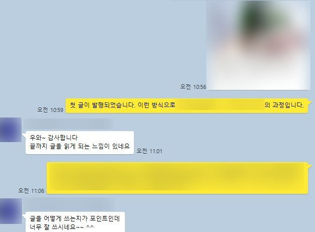
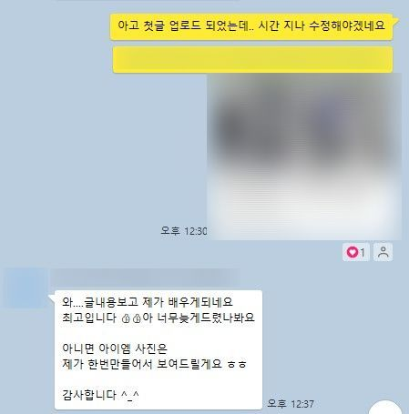
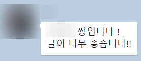
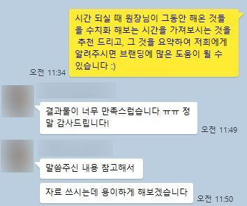
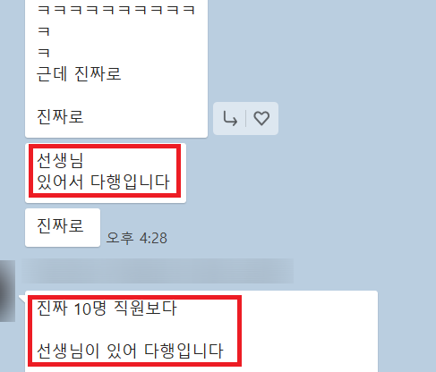
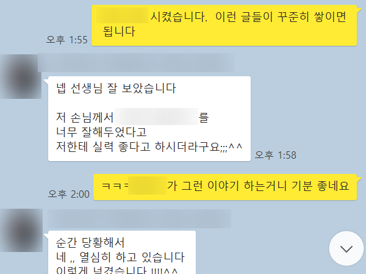
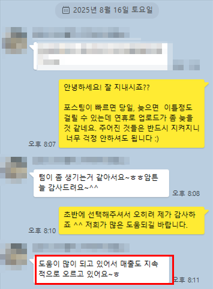
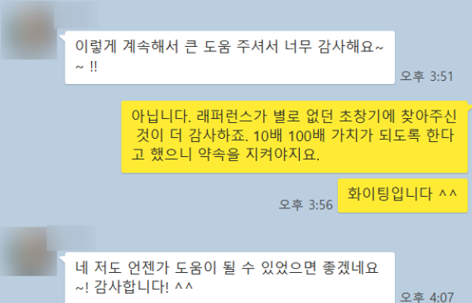
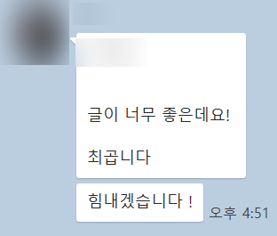
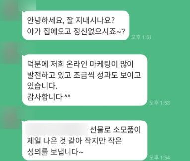
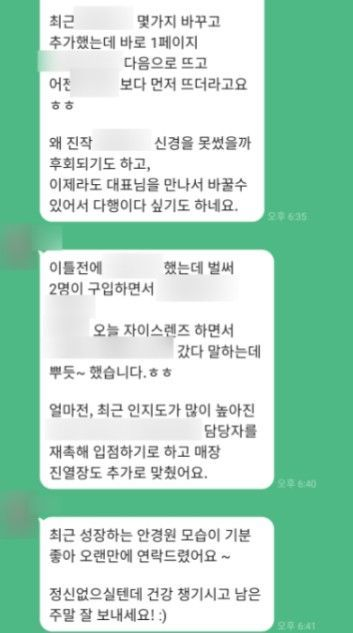
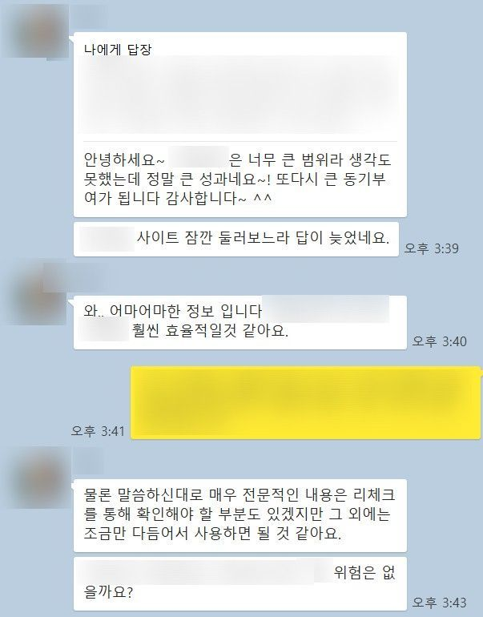
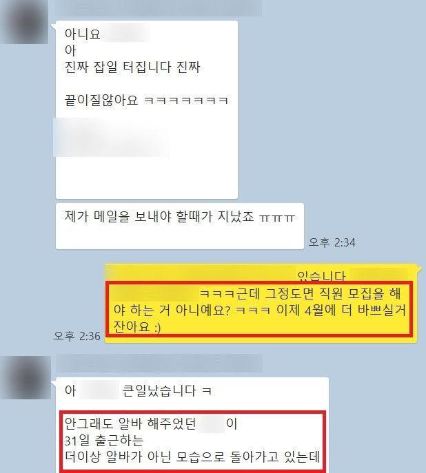
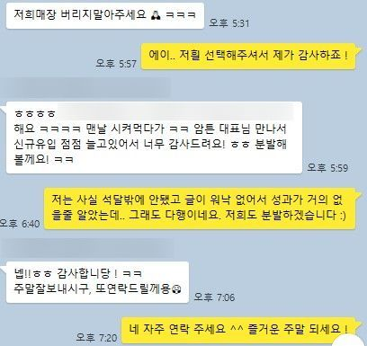
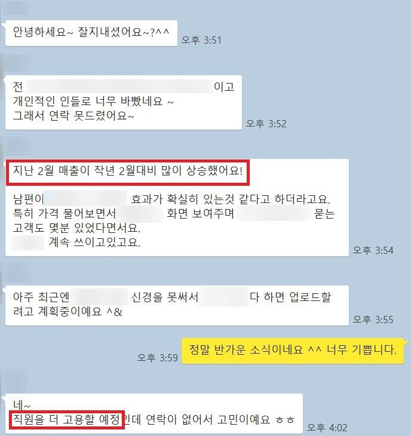
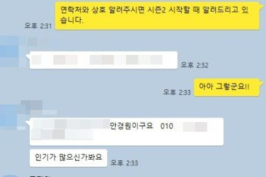
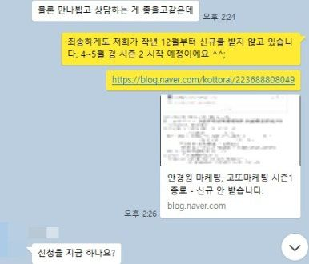
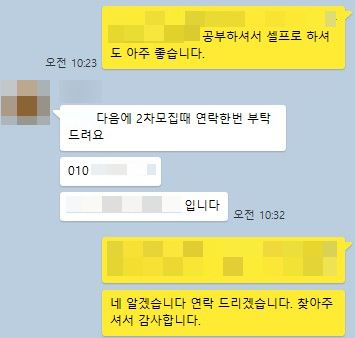
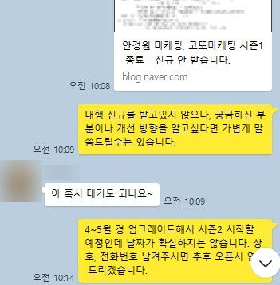
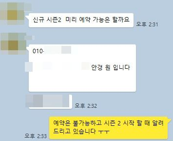
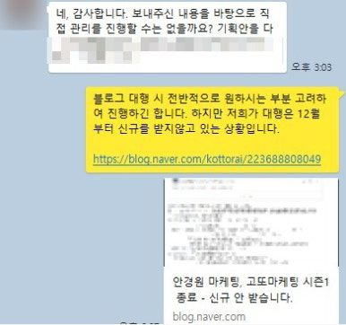
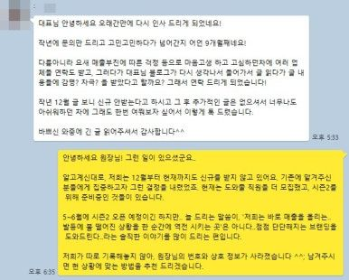
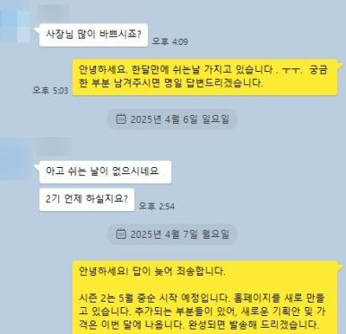
개별 고객의 경험이며,
모든 안경원에 같은 결과를 약속하지 않습니다.